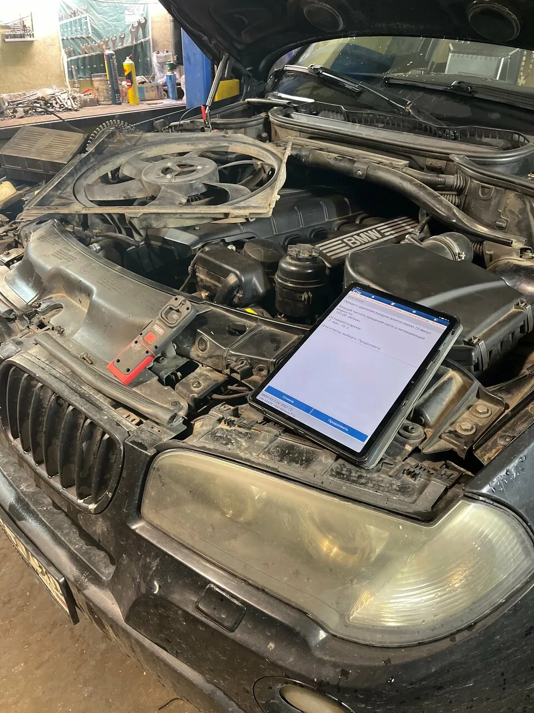
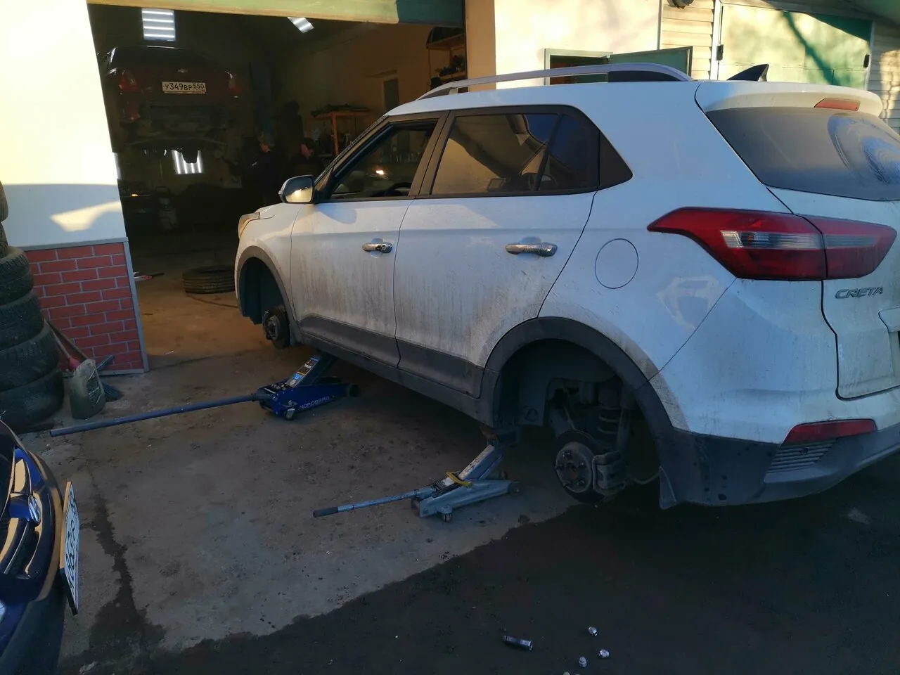
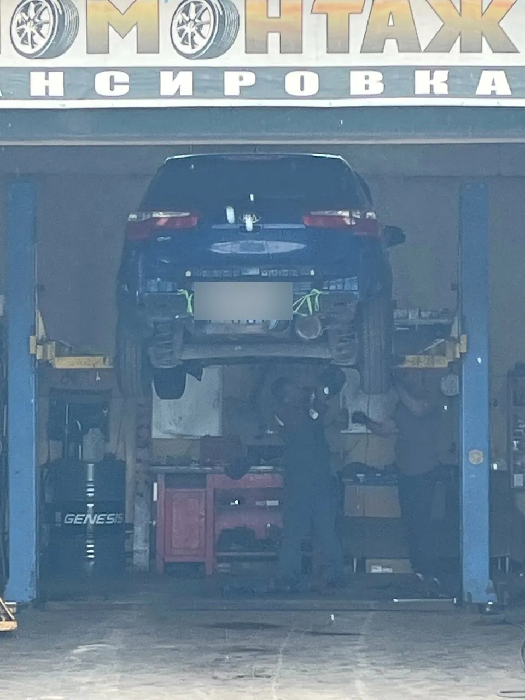

Авто лайф – диагностика, слесарный и кузовной ремонт, сварка, покраска и шиномонтаж. Местные возвращаются сюда снова и снова, а тех, кто встал на трассе, стараются принять без долгой очереди.
«Спасибо, что не отказали, не бросили в беде.»Вячеслав С., иногородний
Звоните. Вот что рассказывают те, кто уже оказывался в такой ситуации.
трасса М5
«Поломался на трассе м5. Обзвонил много сервисов, позаписи, через три дня, может быть сегодня, отказали все, а мне надо ехать. Авто Лайф помог, передвинул очередь, подождали, загнали машину, начали ремонт.»
Иван Вьюшкинмашина не на ходу
«нашли время приехать ко мне, осмотреть и диагностировать, а также помогли найти самый простой способ доставки автомобиля до сервиса.»
Евгения Т.потекли тормоза
«потекла тормозная трубка, ребята выручили, отглушили, сами привезли жидкость»
Вячеслав С.ехали издалека
«делали машину до утра чтоб мы ехали дальше.»
Роман П.нет запчасти
«Так как я неместный,с хозяином сервиса ездили за запчастями»
Иван Вьюшкин
что делаем
От диагностики до покраски кузова
«и диагностику сделают и мотор посмотрит и шиномонтаж в общем как говорится всё что сами могут всё сделают даже машину могут полностью покрасить» – Евгений Котенко

ДиагностикаЭлектронная диагностика, эндоскопия двигателя, выезд к машине, которая не доедет сама
Слесарный ремонт и подвеска
«сразу определили поломку оперативно устранили неисправность, дополнительно ещё нашли критическую неисправность в ходовой»
«были заказаны с их помощью запчасти и сделаны все работы.»
Александр Б., Chevrolet Lacetti

Предрейсовый техосмотр
Для тех, кто работает на машине. Условия – {{условия техосмотра}}
мастера
Заза, Роман и хозяин, который сам едет за запчастью
Заза
«Мастер Заза огромный молодец, настоящий профессионал.»
Евгения Т.
Роман
«Мастер Роман все сделал на высшем уровне, дал рекомендации и все подробно показал и объяснил»
Женя Б.
Хозяин сервиса
«несмотря на свою занятость, хозяин лично сам ездил со мной.»
Иван Вьюшкин

«Машину купил не новую и она, естественно, преподносит "сюрпризы". Но, благодаря мастерам этого сервиса, количество потраченных денег и времени в ремонте сведенно к минимуму.»Дмитрий М.
цены и гарантия
Сколько стоит
Стоимость зависит от машины и работы – назовём её по телефону или в WhatsApp.
Сезонный шиномонтаж2500 ₽кроссовер R16 с датчиками, по словам клиента в 2024–2025 годах
Компьютерная диагностика{{цена}}
Покраска элемента{{цена}}
Сварочные работы{{цена}}
Гарантия на работы есть: «Гарантия за сделанную работу.» Условия: {{условия гарантии}}
отзывы
Что говорят о нас наши клиенты
5,0119 оценок и 92 отзыва на Яндекс Картах
Огромное спасибо слесарям, хозяину Авто Лайф. Помогли в трудную минуту. Поломался на трассе м5. Обзвонил много сервисов, позаписи, через три дня, может быть сегодня, отказали все, а мне надо ехать. Авто Лайф помог, передвинул очередь, подождали, загнали машину, начали ремонт. Так как я неместный,с хозяином сервиса ездили за запчастями, несмотря на свою занятость, хозяин лично сам ездил со мной. Хорошие, отзывчивые ЛЮДИ, ОГРОМНОЕ СПАСИБО.
Рекомендую! Очень человечные мастера! когда стало понятно, что машина своим ходом не доедет до сервиса, нашли время приехать ко мне, осмотреть и диагностировать, а также помогли найти самый простой способ доставки автомобиля до сервиса. Починили за короткие сроки и человеческие деньги, ничего лишнего. Все пояснили. Ещё долго приставала с вопросами и сомнениями, ведь в интернете рекомендовано другое, но благодарна, что мне выделили немало лишнего времени, чтобы пояснить, как правильно и на что обращать внимание. Видно, что за свою работу болеют душой. Мастер Заза огромный молодец, настоящий профессионал.
Рекомендую данный сервис! Обращался по поводу замены антифриза и прокладки клапанной крышки. Мастер Роман все сделал на высшем уровне, дал рекомендации и все подробно показал и объяснил, при случае буду обращаться ещё в этот сервис!
Большое спасибо мастерам этого сервиса! Который раз убеждаюсь, что надо обращаться только сюда. Честно продиагностируют, подберут удобное время и всегда дадут нужный и правильный совет! Машину купил не новую и она, естественно, преподносит "сюрпризы". Но, благодаря мастерам этого сервиса, количество потраченных денег и времени в ремонте сведенно к минимуму. Всем автовладельцам рекомендую не тратить время на поиск "суперсервиса", поверьте, именно этот сервис самый лучший!
Спасибо за помощь. Сам иногородний, потекла тормозная трубка, ребята выручили, отглушили, сами привезли жидкость, сделали, что смогли, что бы можно было передвигаться. Спасибо, что не отказали, не бросили в беде.
Ремонтировала машину в этом сервисе осталась довольна,сразу определили поломку оперативно устранили неисправность, дополнительно ещё нашли критическую неисправность в ходовой,так же оперативно и качественно устранили.Персонал очень внимательный.Всем советую
Сервис ОГОНЬ. Пригонял им шевролет лачетти с проблемой по подвеске. Скажу вам они мастерски осмотрели неполадки. После чего были заказаны с их помощью запчасти и сделаны все работы. Ребята ответственно относятся к работе. Пригоняйте к ним не пожалеете. Александр, счастливый обладатель лачетти и знакомством для себя данным автосервисом.
Добрый день. Обратился в этот сервис за сезонным шиномонтажем осенью 24. Сотрудники приятные, сделали качественно. Цена 2500р на кроссовер 16r с датчиками. Может где-то и дешевле, но в основом дороже предлагают. Поэтому цена адекватная.
В этом году весна тёплая и ждать апреля смысла нет. 8 марта 25 ребята снова меня выручили, в тот момент, когда ближайшие сервисы не работали. Цена приятно удивила стабильность 6, те-же 2500р. Для себя принял решение ездить к ним даже из далека, и остальным рекомендую. По ремонту не обращался, только в планах.
Порядочность со стороны мастеров,. Без всякого развода на деньги, как сейчас многих местах практикуется. Гарантия за сделанную работу. По больше бы таких сервисов. Я бываю у них очень часто и очень доволен.... Спасибо им и удачи..
Спасибо огромное ребятам, очень сильно выручили отремонтировали срочно, работали до позна, пошли на уступки, сделали качественно, ещё раз спасибо огромное, имею несколько машин буду обращаться только к ним. Всем советую.
Хорошие ребята, ехали из далека и сломались, нас не бросили, делали машину до утра чтоб мы ехали дальше. Довольны, 5 из 5! И цены адекватные.
Хороший автосервис всегда сюда приезжаю работают ребята хорошо договорился сделали всем огромное спасибо советую всем сюда заезжать хочу ещё добавить если есть какие-то неисправности в дороге и вы заедете эти ребята вам всегда помогут и диагностику сделают и мотор посмотрит и шиномонтаж в общем как говорится всё что сами могут всё сделают даже машину могут полностью покрасить всем советую